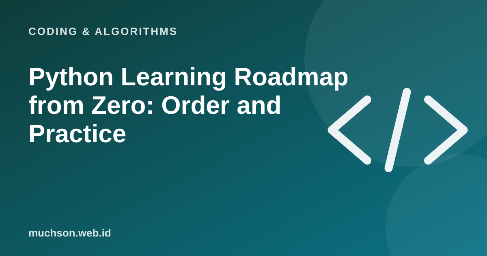

Home › Articles › Coding & Algorithms
Coding & AlgorithmsPython Learning Roadmap from Zero: Order and Practice
Python is often recommended for beginners because its syntax is easy to read, and it is widely used in data, automation and AI. The biggest obstacle is usually not the language, but not knowing the order to learn in and not building a habit of practice.

An eight-week learning map
Text description of the diagram
- Week 1: Basics: variables, data types, input/output. Write a simple calculator program.
- Week 2: Branching and loops. Make a number-guessing game and a times table.
- Week 3: Functions. Break a program into small functions.
- Week 4: Lists, dictionaries, sets. Work with a shopping list and student data.
- Week 5: Files and errors. Read and write files, handle mistakes.
- Week 6: Modules and libraries. Use the standard library and pip.
- Week 7: A small project. An expense tracker or a task reminder.
- Week 8: Tidy up and share. Git, documentation and simple tests.
How to practise effectively
- Type all the code yourself, do not just watch.
- After you understand a concept, make an example of your own.
- Practise every day, even if only for 30 minutes.
- Practising directly in the browser removes the setup hurdle at the start.
- Break a problem into small steps before writing code.
- Read the error message: it usually names the line and the kind of problem.
Mistakes that often stop beginners
Using AI to learn
AI can be a patient tutor if used properly: ask for hints, not the full answer, then explain the code in your own words. If you cannot explain it, you do not really understand it yet.
FAQ
Do I need maths to learn Python?
The basics are enough. Maths matters more in certain fields such as data science and machine learning.
How long until I can work as a programmer?
It varies a lot. Consistency, real projects and a portfolio matter more than the length of a course.
Python or JavaScript first?
Python suits learning logic, data and automation. JavaScript suits you if your goal is building websites. Choose by goal.